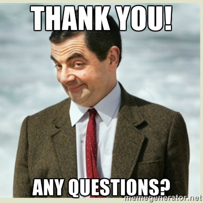

<!doctype html>
<html lang="en">

  <head>
    <meta charset="utf-8">

    <title>Corso Python 2015 - Politecnico Open unix Labs</title>

    <meta name="description" content="A gentle introduction to Python by POuL">
    <meta name="author" content="Fabrizio Ferrai">
    <meta name="author" content="Germano Gabbianelli">

    <meta name="apple-mobile-web-app-capable" content="yes" />
    <meta name="apple-mobile-web-app-status-bar-style" content="black-translucent" />

    <meta name="viewport" content="width=device-width, initial-scale=1.0, maximum-scale=1.0, user-scalable=no, minimal-ui">

    <link rel="stylesheet" href="../reveal.js/css/reveal.css">
    <link rel="stylesheet" href="../reveal.js/css/theme/night.css" id="theme">

    <!-- Printing and PDF exports -->
    <script>
      var link = document.createElement( 'link' );
      link.rel = 'stylesheet';
      link.type = 'text/css';
      link.href = window.location.search.match( /print-pdf/gi ) ? '../reveal.js/css/print/pdf.css' : '../reveal.js/css/print/paper.css';
      document.getElementsByTagName( 'head' )[0].appendChild( link );
    </script>

    <!--[if lt IE 9]>
    <script src="../reveal.js/lib/js/html5shiv.js"></script>
    <![endif]-->

    <!-- For syntax highlighting -->
	<link rel="stylesheet" href="../reveal.js/highlight.js/src/styles/solarized_light.css" id="highlight-theme">
  </head>

  <style type="text/css">
  .reveal pre code {
    color: #3f3f3f;
    background: #eee none repeat scroll 0% 0%;
    font-size: 1.5em;
    line-height: 1.4em;
    border-radius: .2em;
  }
  </style>

  <body>
    <div class="reveal">
      <!-- Any section element inside of this container is displayed as a slide -->
      <div class="slides">
        <!-- Slides are separated by newline + three dashes + newline, vertical slides identical but two dashes -->
			<section data-markdown data-separator="^\n---\n$"
			         data-separator-vertical="^\n--\n$">
				<script type="text/template">


<!-- .slide: data-background="#ffffff" -->


---

# [poul.org](https://poul.org)
<iframe src="https://poul.org" frameborder="0" width="100%" height="500px"></iframe>

---

<!-- .slide: data-background="#333333" -->

<div style="float:left; width:50%">


<h3> Fabrizio Ferrai</h3>
<h4> [@fabferrai](https://twitter.com/fabferrai) </h4>
<h4> [ferrai.io](http://ferrai.io) </h4>
<h4> [github.com/ff-](http://github.com/ff-)</h4>
<h4> [fabrizio.ferrai@mail.polimi.it](mailto:fabrizio.ferrai@mail.polimi.it) </h4>
</div>

<div style="float:left; width:50%">


<h3> Germano Gabbianelli</h3>
<h4> &nbsp; </h4>
<h4> [blog.germano.io](http://blog.germano.io) </h4>
<h4> [github.com/tyrion](http://github.com/tyrion)</h4>
<h4> [tyrion@python.it](mailto:tyrion@python.it) </h4>
</div>

---

# Calendario

* 11 Giugno: introduzione al linguaggio
* 18 Giugno: Python all'opera: real-world applications

---

# Introduzione

--


--

## Programmare
### Perché?

- creare <!-- .element: class="fragment" -->
- siamo circondati da software <!-- .element: class="fragment" -->
- dare ordini alle macchine <!-- .element: class="fragment" -->

**automatizzare** <!-- .element: class="fragment" -->

--

### Come
- tramite i <!-- .element: class="fragment" --> *linguaggi di programmazione*
- diversi livelli di astrazione: più o meno vicino alla macchina <!-- .element: class="fragment" -->

--

## Python
### Simple and Powerful

<blockquote>
  &ldquo;Python is an **easy to learn**, powerful programming language.
  It has efficient high-level data structures and a **simple but effective** approach to object-oriented programming.
  Python’s **elegant syntax** and **dynamic typing**, together with its interpreted nature, make it an ideal language
  for scripting and **rapid application development** in many areas on most platforms.&rdquo;
</blockquote>

--


--

## Story behind the name

<blockquote>
  &ldquo;Guido van Rossum, the creator of the Python language, named the language after the BBC show "Monty Python’s
  Flying Circus". He doesn’t particularly like snakes that kill animals for food by winding their long bodies
  around them and crushing them.&rdquo;
</blockquote>

--

## Installazione

* [Windows](http://www.howtogeek.com/197947/how-to-install-python-on-windows/)
* [Mac OS X](http://www.macobserver.com/tmo/article/how-to-upgrade-your-mac-to-python-3)
* Linux: dovrebbe esserci già (digitate "python3" nel terminale).

--

## L'interprete

```bash
$ python3
Python 3.4.2 (default, Oct  8 2014, 10:45:20)
[GCC 4.9.1] on linux
Type "help", "copyright", "credits" or "license" for more information.
>>>
```

--

<!-- .slide: data-background="#cc0000" -->
# Useremo Python3

---

# Hello World!

--

## C

```c
#include <stdio.h>

int main() {
	printf("Hello World!\n");
	return 0;
}
```

## Java

```java
public class HelloWorld {
	public static void main(String[] args) {
		System.out.println("Goodbye, World!");
	}
}
```

--


--


# Python

```python
print('Hello World!')
```

--

<!-- .slide: data-background="http://i.giphy.com/90F8aUepslB84.gif" -->

--


--

## Editor

Le versioni di Python per Windows e OSX contengono IDLE

<!-- .element: class="fragment" --> Altrimenti: [Notepad++](https://notepad-plus-plus.org/), [Gedit](https://wiki.gnome.org/Apps/Gedit), [Atom](https://atom.io/) 

---

# Basics

--

## Demo time: calcolatrice!

--

## Commenti

Tutto quello scritto dopo il `#` non viene eseguito

```python
>>> 1 + 1 # posso scrivere quello che voglio qui
2
```

```python
>>> """Stringa multilinea
Di solito si usa come commento
Usato anche per la documentazione
(maggiori info tra poco)"""
```
<!-- .element: class="fragment" -->

--

## Errori

Succede quando scrivete $^%%@!& *- cioè spesso.* <!-- .element: class="fragment" -->

Segnalati dall'interprete: <!-- .element: class="fragment" -->

```python
>>> 2 / 0
Traceback (most recent call last):
  File "<stdin>", line 1, in <module>
ZeroDivisionError: division by zero
``` 
<!-- .element: class="fragment" -->

--

# Don't let <br>your cat code.

<!-- .slide: data-background="http://i.giphy.com/ue5ZwFCaxy64M.gif" -->

--

## Variabili

Associamo dei nomi a dei valori 

e teniamoli da parte per riferirci a loro in modo semplice <!-- .element: class="fragment" -->

```python
>>> x = 6
>>> 2 * x
12

>>> y = x + 4
>>> y
10
```
<!-- .element: class="fragment" -->

--

## Bool

Informazione di tipo **Vero** o **Falso**

```python
>>> 2 < 3
True

>>> 5 + 1 == 3
False

>>> x = 3 * 2 > len("abc")
>>> x
True
```

--

## Algebra Booleana

con i __Bool__ si possono fare operazioni

```python
>>> True and False
False

>>> (4 < 3) or (1 + 1 == 2)
True

>>> not (2 < 3)
False
```

--


---

# Tipi

--

## Bool

Assume uno tra questi due valori: `True` o `False`

--

## Numeri

Possono essere `int` o `float`

```python
>>> x = 3
>>> type(x)
<class 'int'>
>>> y = 3.14
>>> type(y)
<class 'float'>
```
<!-- .element: class="fragment" -->

--

## Stringhe

```python
>>> s = "Hello"

>>> s + " " + "World"
"Hello World"
```

Informazioni sulle stringhe: <!-- .element: class="fragment" -->
```python
>>> len("ciao")
4
```
<!-- .element: class="fragment" -->

--

## Liste, Tuple, Dizionari

* Lista: `[4, "abc", 4.3]`
* Tupla: `(4, "abc", 4.3)`
* Dizionario: `{"a": 3, "b": 42}`

<!-- .element: class="fragment" --> Ma ne parleremo nel capitolo [__"Strutture Dati"__](#/12)

--

<!-- .slide: data-background="#660099" -->
## Nota: operazioni tra tipi diversi

A volte si può:
```python
>>> "abc " * 2
'abc abc '
```

...E a volte no. <!-- .element: class="fragment" -->

```python
>>> "abc" + 2
Traceback (most recent call last):
  File "<stdin>", line 1, in <module>
TypeError: Can't convert 'int' object to str implicitly
```

<!-- .element: class="fragment" -->

--


---

# Strutture di controllo

--

## `if`

Eseguire istruzioni solo se si verificano certe condizioni

```python
>>> x = 3
>>> if x > 2:
... 	print(x," è maggiore di 2")
... 	print("e la loro differenza è", x-2)
...
3 è maggiore di 2
e la loro differenza è 1
```

--

<!-- .slide: data-background="#cc0000" -->
## Attenzione

Per identificare un blocco di codice si usano __4 spazi__

--

## `else`

Si possono eseguire istruzioni anche se la condizione è falsa

```python
>>> x = 5
>>> y = 7
>>> if x == y:
... 	print("x è già uguale a y")
... else:
... 	print("x è diverso da y")
... 	print("li voglio rendere uguali")
... 	x = y # assegno il valore di y a x
...
x è diverso da y
li voglio rendere uguali
>>> x
7
```
<!-- .element: class="fragment" -->

--

## `while`

Eseguire più volte le stesse istruzioni (fintantoché una condizione è vera)

```python
>>> x = 0
>>> while x < 3:
... 	x = x + 1
... 	print("ora x vale", x)
...
ora x vale 1
ora x vale 2
ora x vale 3
```
<!-- .element: class="fragment" -->

--

## `for`

Cicli di esecuzione sulle sequenze

```python
for i in [0, 1, 2, 3, 4]:
	print i
```

--

## `break`, `continue`

* `break`: interrompe l'iterazione
* `continue`: salta all'iterazione successiva

```python
for i in [0, 1, 2, 3, 4, 5, 6, 7]:
	if i == 2:
		continue
	if i == 6:
		break
	print(i)
else:
	print("The for loop is over")
```
<!-- .element: class="fragment" -->

---

# Funzioni

--

## Cosa sono?

* sequenze di istruzioni <!-- .element: class="fragment" -->
* con degli ingressi e un'uscita <!-- .element: class="fragment" -->

```python
>>> abs(-3)
3
```
<!-- .element: class="fragment" -->

```python
>>> min(3, 4, 2)
2
```
<!-- .element: class="fragment" -->

--

## print()

Stampa l'ingresso che gli viene passato

```python
>>> y = 4.2
>>> print(y)
4.2
```

Supporta più argomenti <!-- .element: class="fragment" -->

```python
>>> print(10, 1 + 2)
10 3
```
<!-- .element: class="fragment" --> 

--

## First things First

```python
def test():
	pass
```


--

## Parametri e Argomenti

Valori parametrici che la funzione utilizzerà al suo interno

```python
def test(a, b):
	print(a+b)
```

--

## Argomenti di default

Se omettiamo un parametro, la funzione userà quello di default

```python
def say(message, times=1):
	print(message * times)

say('Hello')
say('World', 5)
```

--

## Keyword arguments

Anziché passare gli argomenti in ordine, li chiamiamo per nome

```python
def func(a, b=5, c=10):
	print('a is', a, 'and b is', b, 'and c is', c)

func(3, 7)
func(25, c=24)
func(c=50, a=100)
```

--

<!-- .slide: data-background="#006600" -->
## Approfondimento: parametri VarArgs

Possiamo scegliere di accettare qualsiasi parametro ci viene passato

```python
>>> def test(*args, **kwargs):
... 	print(args, kwargs)
... 
>>> test(1,2,3, a=3)
(1, 2, 3) {'a': 3}
```

--

## Il `return` statement

Tramite il `return` la funzione ci dà un risultato

```python
>>> def test_return(to_print, to_return):
... 	print(to_print)
... 	return to_return*6
... 
>>> x = test_return("Batman's song:", "nana")
Batman's song:
>>> x
nananananananananananana
```

--

<!-- .slide: data-background="http://i.giphy.com/gFYal2EQK5D4Q.gif" -->

--

## Documentazione

<blockquote>
	**Fact**: passati tre mesi da quando avete scritto un pezzo di codice, 
	non saprete più cosa fa.
</blockquote>

--

## That just happened.


## Docstrings to the rescue! <!-- .element: class="fragment" -->

--

## Le docstring

```python
def print_max(x, y):
	"""Prints the maximum of two numbers.
	The two values must be integers."""

	# convert to integers, if possible
	x = int(x)
	y = int(y)

	if x > y:
		print(x, 'is maximum')
	else:
		print(y, 'is maximum')

print_max(3, 5)
help(print_max)
```

---



---

# Moduli

--

## Moduli

* Permettono di riutilizzare funzioni che abbiamo definito, in altri programmi che scriveremo
* Un modulo è semplicemente un file con estensione .py
* Un modulo può essere importato da un altro programma

```python
>>> import mio_modulo
```

--

## `from .. import`

Ci permette di importare soltanto ciò che vogliamo da un modulo:

```python
>>> from math import sqrt
>>> sqrt(16)
4.0
```

--

## La variabile `__name__`

* Contiene il nome del modulo
* È utile per sapere se un modulo è stato importato o se è stato eseguito direttamente

```python
if __name__ == '__main__':
	print('Programma eseguito direttamente')
else:
	print('Questo modulo è stato importato')
```

--

## La funzione `dir`

* Senza argomenti, restituisce la lista dei nomi definiti nel contesto corrente.
* Con un argomento, elenca tutti i suoi attributi.<br>
	Per esempio le funzioni, le classi e le variabili definite in un modulo.

---

# Strutture Dati

--

## Liste

```python
>>> spesa = ['mele', 'pasta']
>>> spesa.append('fragole')
>>> spesa[0] = 'pere'
['pere', 'pasta', 'fragole']
```
<!-- .element: class="fragment" --> 

- Le liste contengono una sequenza ordinata di oggetti <!-- .element: class="fragment" -->
- <!-- .element: class="fragment" -->  Sono *mutabili*: possono essere alterate aggiungendo, modificando o rimuovendo elementi
- Si definiscono separando gli elementi con le virgole e racchiudendoli tra <!-- .element: class="fragment" --> parentesi **quadre**

--

## Tuple

`(42, "ciao", 3.7)` <!-- .element: class="fragment" -->

- Le tuple vengono usate per contenere insieme più oggetti. <!-- .element: class="fragment" -->
- Simili alle liste, ma  <!-- .element: class="fragment" --> sono *immutabili*.
- Si definiscono separando gli elementi con le virgole e racchiudendoli <!-- .element: class="fragment" --> tra parentesi **tonde**.

--

## Dizionari

- Permettono di associare <!-- .element: class="fragment" --> dei *valori* a delle *chiavi*
- E di recuperare un determinato valore in maniera efficiente conoscendo la relativa chiave. <!-- .element: class="fragment" -->
<!-- .element: class="fragment" --> - Sono simili ad una rubrica con cui possiamo recuperare l'email (*valore*) di una persona sapendo solo il suo nome (*chiave*): 

```python
rubrica = {
	"Bill Gates": "bill@gat.es",
	"Richard Stallman": "rms@gnu.org",
}
```
<!-- .element: class="fragment" -->
<!-- .element: class="fragment" --> Le chiavi devono essere *immutabili*

--

## Sequenze

- Liste, tuple e stringhe <!-- .element: class="fragment" --> sono *sequenze* 
- È possibile eseguire determinate operazioni su tutti i tipi di sequenze <!-- .element: class="fragment" -->
<!-- .element: class="fragment" --> - Le più importanti sono i test di appartenenza (`in` e `not in`) e le operazioni con gli indici

```pyhton
>>> spesa = ['mela', 'mango', 'carota']
>>> 'mela' in spesa
True
>>> spesa[1]
'mango'
```
<!-- .element: class="fragment" -->

--

## Set (o Insiemi)

`{'mela', 'pera', 'banana'}` <!-- .element: class="fragment" -->

- Un set è una <!-- .element: class="fragment" --> collezione *non ordinata* di oggetti senza elementi duplicati.
- Supportano le operazioni matematiche degli insiemi come unione, intersezione, differenza e differenza simmetrica <!-- .element: class="fragment" -->
- Si definiscono separando gli elementi con le virgole e racchiudendoli tra <!-- .element: class="fragment" --> parentesi *graffe*

--

## Riferimenti

Quando assegnamo un oggetto ad una variabile, la variabile contiene <!-- .element: class="fragment" --> solo un *riferimento* all'oggetto
<br>
e non l'oggetto stesso.

Cosa contiene la variabile spesa_a ? <!-- .element: class="fragment" -->

```python
>>> spesa_a = ['mela', 'mango']
>>> spesa_b = spesa_a
>>> spesa_b.append('carota')
```
<!-- .element: class="fragment" -->

```python
['mela', 'mango', 'carota']
```
<!-- .element: class="fragment" -->

---

# Programmazione Orientata agli Oggetti

--

## Paradigm shift

- Fino ad ora abbiamo programmato in <!-- .element: class="fragment" --> maniera *procedurale*, ovvero organizzato i nostri programmi in funzioni.
- Il paradigma procedurale mostra i suoi limiti quando scriviamo programmi sufficientemente grandi e in molti problemi che si possono trattare più facilmente con il <!-- .element: class="fragment" --> paradigma della *Programmazione Orientata agli Oggetti* (OOP)
- Il paradigma OOP combina dati e funzioni in <!-- .element: class="fragment" -->
 entitità chiamate *oggetti*.

--


--

## Classi e Istanze

- Classi e oggetti sono i due concetti principali: <!-- .element: class="fragment" -->
<!-- .element: class="fragment" --> una **classe** crea un nuovo tipo, mentre gli **oggetti** sono **istanze** di una classe
- In Python ogni cosa è un oggetto <!-- .element: class="fragment" -->
- Possiamo usare <!-- .element: class="fragment" -->  le funzioni `type` e `isinstance` per ottenere informazioni sul tipo di un oggetto</li>

```python
>>> type("ciao")
str
>>> isinstance("ciao", str)
True
```
<!-- .element: class="fragment" -->

--

## Field, metodi e attributi

- Gli oggetti possono contenere <!-- .element: class="fragment" --> dati, chiamati **field**
- E delle funzioni <!-- .element: class="fragment" --> chiamate **metodi** della classe.
- Un field può appartenere <!-- .element: class="fragment" -->  alla classe (*variabile di classe*) o all'istanza (*variabile d'istanza*).
- I field e i metodi di una classe <!-- .element: class="fragment" --> nel loro insieme sono detti **attributi** della classe

--

<!-- .slide: data-background="http://i.giphy.com/WE8GoldTC2pXy.gif" -->

--


---

# Input e Output

--

## Ma prima...

--

<!-- .slide: data-background="http://i.giphy.com/HnB6s6oiWvW2Q.gif" -->

--

## I/O

Ci sono casi in cui vogliamo che il nostro programma interagisca con l'utente.
Per esempio chiedendo di inserire dei valori di ingresso (*input*) all'utente e stampando dei risultati in *output*.

Useremo `input()` per ricevere dei valori e `print()` per stamparli.

```python
nome = input("Inserisci il tuo nome: ")
print("Il tuo nome è", nome)
```

--

## Formattazione dell'Output

Per formattare l'output nella maniera desiderata <!-- .element: class="fragment" --> spesso la funzione `print()` non è sufficiente.
        
Possiamo usare i metodi della <!-- .element: class="fragment" --> classe `str` e in particolare `str.format()`

```python
print('This {food} is {adjective}.'.format(
	food='spam', adjective='horrible')
```
<!-- .element: class="fragment" --> 

--

## Gestione dei File

- La <!-- .element: class="fragment" -->  funzione `open(filename, mode)` ci permette di aprire un file e restituisce un *oggetto file*.
- Il <!-- .element: class="fragment" --> parametro `mode` ci permette di specificare in che modalità aprire il file (sola lettura, scrittura, etc.).
- Possiamo interagire con il file tramite i metodi dell'oggetto file (read, readline, write, writeline, close) <!-- .element: class="fragment" --> 
- Ricordiamoci di chiudere <!-- .element: class="fragment" --> sempre il file una volta finito di usarlo, con il metodo `close`.

---

# Errori ed Eccezioni

--

## Errori di Sintassi

```python
>>> while return print('Hello?') # ??????
SyntaxError: invalid syntax
```

- Sono i più comuni da commettere per chi sta imparando Python :-) <!-- .element: class="fragment" -->
- Accadono quando scriviamo una istruzione in <!-- .element: class="fragment" --> maniera *sintatticamente* errata
- L'interprete Python non riesce a capirne il significato e quindi non può eseguirla <!-- .element: class="fragment" -->


--

## Eccezioni

- Rappresentano il verificarsi di <!-- .element: class="fragment" --> situazioni *eccezionali*
- Per esempio, cosa succede se stiamo tentando di leggere un file che non esiste? O se lo eliminiamo mentre il nostro programma è in esecuzione? <!-- .element: class="fragment" -->

--

<!-- .slide: data-background="http://i.giphy.com/hsTTLR7cv53e8.gif" -->

--

## Gestire le Eccezioni

- Possiamo (e dovremmo) gestire le eccezioni racchiudendo le nostre istruzioni in un <!-- .element: class="fragment" --> blocco `try/except`

```python
try:
	x = int(input('Inserisci un intero: '))
except ValueError:
	print('Oops! Non era un intero.')
```
<!-- .element: class="fragment" -->

--

## Sollevare Eccezioni

- In alcuni casi può essere utile sollevare delle eccezioni <!-- .element: class="fragment" -->
- Per esempio quando una funzione non è in grado di gestire alcuni input <!-- .element: class="fragment" -->
- Dovranno essere gestite (catturate) dal chiamante della funzione, altrimenti l'utente vedrà un messaggio di errore <!-- .element: class="fragment" -->

```python
def mandaEmail(email, testo):
	if not '@' in email:
		raise ValueError("email non valida")
	# [..]
```
<!-- .element: class="fragment" -->

--

## Definire nuove Eccezioni

- Si possono definire nuove eccezioni, creando una sottoclasse <!-- .element: class="fragment" --> di `Exception` (o di una sua sottoclasse)
- Spesso le eccezioni che ci fornisce Python sono molto generiche, definendo un'eccezione specifica rendiamo il programma più facile da capire e abbiamo maggior controllo nella gestione delle eccezioni <!-- .element: class="fragment" -->

```python
class InvalidEmail(ValueError):
	"""Un indirizzo email invalido"""
```
<!-- .element: class="fragment" -->

---

<!-- .slide: data-background="#00aa00" -->


---

# Links

* [A Byte of Python](http://www.swaroopch.com/notes/python/)
* [Python Tutorial](https://docs.python.org/3.5/tutorial/)

---

# Thank you!


Queste slides sono licenziate Creative Commons<br>
Attribution-ShareAlike 3.0 Unported

## [poul.org](https://www.poul.org)


          </script>
        </section>
      </div>

    </div>

    <script src="../reveal.js/lib/js/head.min.js"></script>
    <script src="../reveal.js/js/reveal.js"></script>

    <script>

    // Full list of configuration options available at:
    // https://github.com/hakimel/reveal.js#configuration
    Reveal.initialize({
      controls: true,
      progress: true,
      history: true,
      center: true,

      transition: 'slide', // none/fade/slide/convex/concave/zoom

      // Optional reveal.js plugins
      dependencies: [
        { src: '../reveal.js/lib/js/classList.js', condition: function() { return !document.body.classList; } },
        { src: '../reveal.js/plugin/markdown/marked.js', condition: function() { return !!document.querySelector( '[data-markdown]' ); } },
        { src: '../reveal.js/plugin/markdown/markdown.js', condition: function() { return !!document.querySelector( '[data-markdown]' ); } },
        { src: '../reveal.js/plugin/highlight/highlight.js', async: true, callback: function() { hljs.initHighlightingOnLoad(); } },
        { src: '../reveal.js/plugin/zoom-js/zoom.js', async: true },
        { src: '../reveal.js/plugin/notes/notes.js', async: true }
      ]
    });

  </script>

  </body>
</html>
